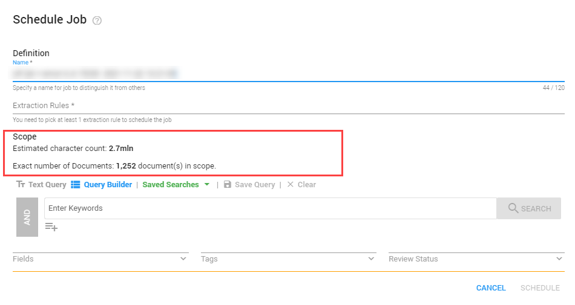

On the Home page, select Insights.

Select Jobs.
Make sure that Extraction Rules have been created in the Library.

View a list of all jobs and their respective extraction rule.
Filter on Job Status
Select one or more:
-
In Progress
-
Cancelling
-
Cancelled
-
Completed
Completed
Enter the name of the job you want to view.
Schedule New Job
-
Select
 .
. -
Define the Name of the new job.
Make sure to distinguish it from the other jobs, for easy recognition. -
Select Extraction Rules.
What kind of information do you want to extract? -
When needed, define the Scope.
The scope defines the estimated character count and the exact number of documents that will be analyzed.
Please note that performing extractions on a whole matter is not always needed and can be very time consuming.
Click Schedule.
|
|
Note: Whenever an entity is under deletion with the status beside it showing “Deleting”, the user is not allowed to schedule another job for the same entity until the deletion is completed.
|